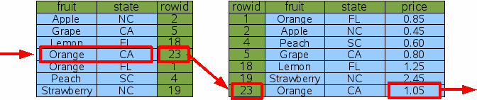
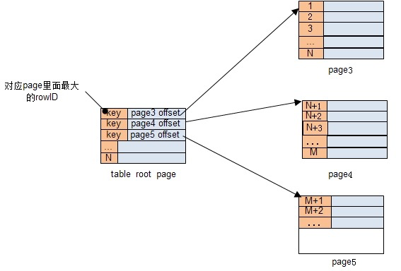
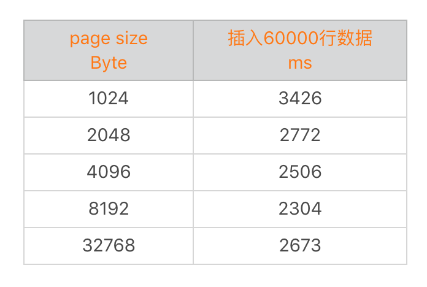
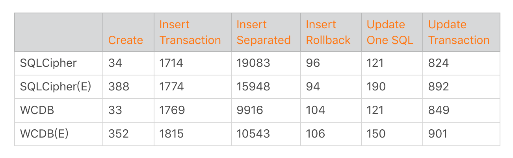
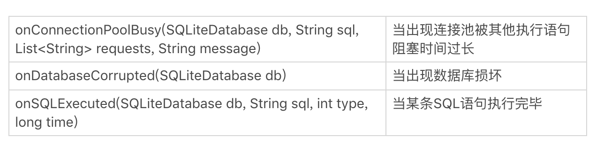
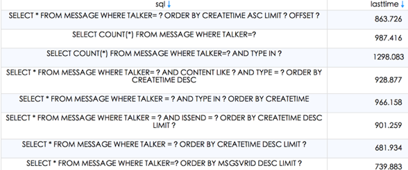
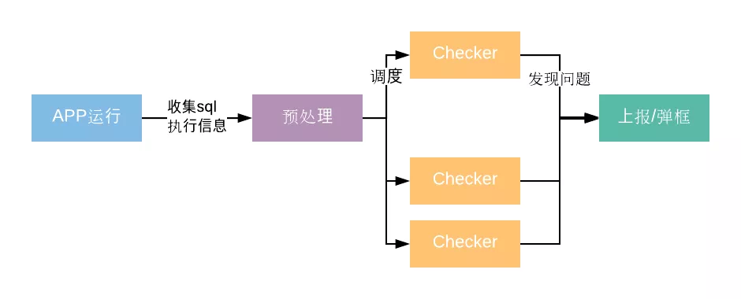

我们先来复习一下前面讲到的存储方法的使用场景：少量的 Key Value 数据可以直接使用 SharedPreferences，稍微复杂一些的数据类型也可以通过序列化成 JSON 或者 Protocol Buffers 保存，并且在开发中获取或者修改数据也很简单。
不过这几种方法可以覆盖所有的存储场景吗？数据量在几百上千条这个量级时它们的性能还可以接受，但如果是几万条的微信聊天记录呢？而且如何实现快速地对某几个联系人的数据做增删改查呢？
对于大数据的存储场景，我们需要考虑稳定性、性能和可扩展性，这个时候就要轮到今天的“主角”数据库登场了。讲存储优化一定绕不开数据库，而数据库这个主题又非常大，我也知道不少同学学数据库的过程是从入门到放弃。那么考虑到我们大多是从事移动开发的工作，今天我就来讲讲移动端数据库 SQLite 的使用和优化。
SQLite 的那些事儿
虽然市面上有很多的数据库，但受限于库体积和存储空间，适合移动端使用的还真不多。当然使用最广泛的还是我们今天的主角 SQLite，但同样还是有一些其他不错的选择，例如创业团队的Realm、Google 的LevelDB等。
在国内那么多的移动团队中，微信对 SQLite 的研究可以算是最深入的。这其实是业务诉求导向的，用户聊天记录只会在本地保存，一旦出现数据损坏或者丢失，对用户来说都是不可挽回的。另一方面，微信有很大一批的重度用户，他们有几千个联系人、几千个群聊天，曾经做过一个统计，有几百万用户的数据库竟然大于 1GB。对于这批用户，如何保证他们可以正常地使用微信是一个非常大的挑战。
所以当时微信专门开展了一个重度用户优化的专项。一开始的时候我们集中在 SQLite 使用上的优化，例如表结构、索引等。但很快就发现由于系统版本的不同，SQLite 的实现也有所差异，经常会出现一些兼容性问题，并且也考虑到加密的诉求，我们决定单独引入自己的 SQLite 版本。
“源码在手，天下我有”，从此开启了一条研究数据库的“不归路”。那时我们投入了几个人专门去深入研究 SQLite 的源码，从 SQLite 的 PRAGMA 编译选项、Cursor 实现优化，到 SQLite 源码的优化，最后打造出从实验室到线上的整个监控体系。
在 2017 年，我们开源了内部使用的 SQLite 数据库WCDB。这里多说两句，看一个开源项目是否靠谱，就看这个项目对产品本身有多重要。微信开源坚持内部与外部使用同一个版本，虽然我现在已经离开了微信团队，但还是欢迎有需要的同学使用 WCDB。
在开始学习前我要提醒你，SQLite 的优化同样也很难通过一两篇文章就把每个细节都讲清楚。今天的内容我选择了一些比较重要的知识点，并且为你准备了大量的参考资料，遇到陌生或者不懂的地方需要结合参考资料反复学习。
1. ORM
坦白说可能很多 BAT 的高级开发工程师都不完全了解 SQLite 的内部机制，也不能正确地写出高效的 SQL 语句。大部分应用为了提高开发效率，会引入 ORM 框架。ORM（Object Relational Mapping）也就是对象关系映射，用面向对象的概念把数据库中表和对象关联起来，可以让我们不用关心数据库底层的实现。
Android 中最常用的 ORM 框架有开源greenDAO和 Google 官方的Room，那使用 ORM 框架会带来什么问题呢？
使用 ORM 框架真的非常简单，但是简易性是需要牺牲部分执行效率为代价的，具体的损耗跟 ORM 框架写得好不好很有关系。但可能更大的问题是让很多的开发者的思维固化，最后可能连简单的 SQL 语句都不会写了。
那我们的应用是否应该引入 ORM 框架呢？可能程序员天生追求偷懒，为了提高开发效率，应用的确应该引入 ORM 框架。但是这不能是我们可以不去学习数据库基础知识的理由，只有理解底层的一些机制，我们才能更加得心应手地解决疑难的问题。
考虑到可以更好的与 Android Jetpack 的组件互动，WCDB 选择 Room 作为 ORM 框架。
2. 进程与线程并发
如果我们在项目中有使用 SQLite，那么下面这个SQLiteDatabaseLockedException就是经常会出现的一个问题。
android.database.sqlite.SQLiteDatabaseLockedException: database is locked at android.database.sqlite.SQLiteDatabase.dbopen at android.database.sqlite.SQLiteDatabase.openDatabase at android.database.sqlite.SQLiteDatabase.openDatabaseSQLiteDatabaseLockedException 归根到底是因为并发导致，而 SQLite 的并发有两个维度，一个是多进程并发，一个是多线程并发。下面我们分别来讲一下它们的关键点。
多进程并发
SQLite 默认是支持多进程并发操作的，它通过文件锁来控制多进程的并发。SQLite 锁的粒度并没有非常细，它针对的是整个 DB 文件，内部有 5 个状态，具体你可以参考下面的文章。
-
官方文档：SQLite locking
-
SQLite 源码分析：SQLite 锁机制简介
简单来说，多进程可以同时获取 SHARED 锁来读取数据，但是只有一个进程可以获取 EXCLUSIVE 锁来写数据库。对于 iOS 来说可能没有多进程访问数据库的场景，可以把 locking_mode 的默认值改为 EXCLUSIVE。
PRAGMA locking_mode = EXCLUSIVE在 EXCLUSIVE 模式下，数据库连接在断开前都不会释放 SQLite 文件的锁，从而避免不必要的冲突，提高数据库访问的速度。
多线程并发
相比多进程，多线程的数据库访问可能会更加常见。SQLite 支持多线程并发模式，需要开启下面的配置，当然系统 SQLite 会默认开启多线程Multi-thread 模式。
PRAGMA SQLITE_THREADSAFE = 2跟多进程的锁机制一样，为了实现简单，SQLite 锁的粒度都是数据库文件级别，并没有实现表级甚至行级的锁。还有需要说明的是，同一个句柄同一时间只有一个线程在操作，这个时候我们需要打开连接池 Connection Pool。
如果使用 WCDB 在初始化的时候可以指定连接池的大小，在微信中我们设置的大小是 4。
public static SQLiteDatabase openDatabase (String path, SQLiteDatabase.CursorFactory factory, int flags, DatabaseErrorHandler errorHandler, int poolSize)跟多进程类似，多线程可以同时读取数据库数据，但是写数据库依然是互斥的。SQLite 提供了 Busy Retry 的方案，即发生阻塞时会触发 Busy Handler，此时可以让线程休眠一段时间后，重新尝试操作，你可以参考《微信 iOS SQLite 源码优化实践》这篇文章。
为了进一步提高并发性能，我们还可以打开WAL（Write-Ahead Logging）模式。WAL 模式会将修改的数据单独写到一个 WAL 文件中，同时也会引入了 WAL 日志文件锁。通过 WAL 模式读和写可以完全地并发执行，不会互相阻塞。
PRAGMA schema.journal_mode = WAL但是需要注意的是，写之间是仍然不能并发。如果出现多个写并发的情况，依然有可能会出现 SQLiteDatabaseLockedException。这个时候我们可以让应用中捕获这个异常，然后等待一段时间再重试。
} catch (SQLiteDatabaseLockedException e) { if (sqliteLockedExceptionTimes < (tryTimes - 1)) { try { Thread.sleep(100); } catch (InterruptedException e1) { } } sqliteLockedExceptionTimes++；}总的来说通过连接池与 WAL 模式，我们可以很大程度上增加 SQLite 的读写并发，大大减少由于并发导致的等待耗时，建议大家在应用中可以尝试开启。
3. 查询优化
说到数据库的查询优化，你第一个想到的肯定是建索引，那我就先来讲讲 SQLite 的索引优化。
索引优化
正确使用索引在大部分的场景可以大大降低查询速度，微信的数据库优化也是通过索引开始。下面是索引使用非常简单的一个例子，我们先从索引表找到数据对应的 rowid，然后再从原数据表直接通过 rowid 查询结果。

关于 SQLite 索引的原理网上有很多文章，在这里我推荐一些参考资料给你：
这里的关键在于如何正确的建立索引，很多时候我们以为已经建立了索引，但事实上并没有真正生效。例如使用了 BETWEEN、LIKE、OR 这些操作符、使用表达式或者 case when 等。更详细的规则可参考官方文档The SQLite Query Optimizer Overview，下面是一个通过优化转换达到使用索引目的的例子。
BETWEEN：myfiedl 索引无法生效SELECT * FROM mytable WHERE myfield BETWEEN 10 and 20;转换成：myfiedl 索引可以生效SELECT * FROM mytable WHERE myfield >= 10 AND myfield <= 20;建立索引是有代价的，需要一直维护索引表的更新。比如对于一个很小的表来说就没必要建索引；如果一个表经常是执行插入更新操作，那么也需要节制的建立索引。总的来说有几个原则：
-
建立正确的索引。这里不仅需要确保索引在查询中真正生效，我们还希望可以选择最高效的索引。如果一个表建立太多的索引，那么在查询的时候 SQLite 可能不会选择最好的来执行。
-
单列索引、多列索引与复合索引的选择。索引要综合数据表中不同的查询与排序语句一起考虑，如果查询结果集过大，还是希望可以通过复合索引直接在索引表返回查询结果。
-
索引字段的选择。整型类型索引效率会远高于字符串索引，而对于主键 SQLite 会默认帮我们建立索引，所以主键尽量不要用复杂字段。
总的来说索引优化是 SQLite 优化中最简单同时也是最有效的，但是它并不是简单的建一个索引就可以了，有的时候我们需要进一步调整查询语句甚至是表的结构，这样才能达到最好的效果。
页大小与缓存大小
在 I/O 文件系统中，我讲过数据库就像一个小文件系统一样，事实上它内部也有页和缓存的概念。
对于 SQLite 的 DB 文件来说，页（page）是最小的存储单位，如下图所示每个表对应的数据在整个 DB 文件中都是通过一个一个的页存储，属于同一个表不同的页以 B 树（B-tree）的方式组织索引，每一个表都是一棵 B 树。

跟文件系统的页缓存（Page Cache）一样，SQLite 会将读过的页缓存起来，用来加快下一次读取速度。页大小默认是 1024Byte，缓存大小默认是 1000 页。更多的编译参数你可以查看官方文档PRAGMA Statements。
PRAGMA page_size = 1024PRAGMA cache_size = 1000每个页永远只存放一个表或者一组索引的数据，即不可能同一个页存放多个表或索引的数据，表在整个 DB 文件的第一个页就是这棵 B 树的根页。继续以上图为例，如果想查询 rowID 为 N+2 的数据，我们首先要从 sqlite_master 查找出 table 的 root page 的位置，然后读取 root page、page4 这两个页，所以一共会需要 3 次 I/O。

从上表可以看到，增大 page size 并不能不断地提升性能，在拐点以后可能还会有副作用。我们可以通过 PRAGMA 改变默认 page size 的大小，也可以再创建 DB 文件的时候进行设置。但是需要注意如果存在老的数据，需要调用 vacuum 对数据表对应的节点重新计算分配大小。
在微信的内部测试中，如果使用 4KB 的 page size 性能提升可以在 5%～10%。但是考虑到历史数据的迁移成本，最终还是使用 1024Byte。所以这里建议大家在新建数据库的时候，就提前选择 4KB 作为默认的 page size 以获得更好的性能。
其他优化
关于 SQLite 的使用优化还有很多很多，下面我简单提几个点。
-
慎用“
select*”，需要使用多少列，就选取多少列。 -
正确地使用事务。
-
预编译与参数绑定，缓存被编译后的 SQL 语句。
-
对于 blob 或超大的 Text 列，可能会超出一个页的大小，导致出现超大页。建议将这些列单独拆表，或者放到表字段的后面。
-
定期整理或者清理无用或可删除的数据，例如朋友圈数据库会删除比较久远的数据，如果用户访问到这部分数据，重新从网络拉取即可。
在日常的开发中，我们都应该对这些知识有所了解，再来复习一下上面学到的 SQLite 优化方法。通过引进 ORM，可以大大的提升我们的开发效率。通过 WAL 模式和连接池，可以提高 SQLite 的并发性能。通过正确的建立索引，可以提升 SQLite 的查询速度。通过调整默认的页大小和缓存大小，可以提升 SQLite 的整体性能。
SQLite 的其他特性
除了 SQLite 的优化经验，我在微信的工作中还积累了很多使用的经验，下面我挑选了几个比较重要的经验把它分享给你。
1. 损坏与恢复
微信中 SQLite 的损耗率在 1/20000～1/10000 左右，虽然看起来很低，不过意考虑到微信的体量，这个问题还是不容忽视的。特别是如果某些大佬的聊天记录丢失，我们团队都会承受超大的压力。
创新是为了解决焦虑，技术都是逼出来的。对于 SQLite 损坏与恢复的研究，可以说是微信投入比较大的一块。关于 SQLite 数据库的损耗与修复，以及微信在这里的优化成果，你可以参考下面这些资料。
2. 加密与安全
数据库的安全主要有两个方面，一个是防注入，一个是加密。防注入可以通过静态安全扫描的方式，而加密一般会使用 SQLCipher 支持。
SQLite 的加解密都是以页为单位，默认会使用 AES 算法加密，加 / 解密的耗时跟选用的密钥长度有关。下面是WCDB Android Benchmark的数据，详细的信息请查看链接里的说明，从结论来说对 Create 来说影响会高达到 10 倍。

关于 WCDB 加解密的使用，你可以参考《微信移动数据库组件 WCDB（四） — Android 特性篇》。
3. 全文搜索
微信的全文搜索也是一个技术导向的项目，最开始的时候性能并不是很理想，经常会被人“批斗”。经过几个版本的优化迭代，目前看效果还是非常不错的。
关于全文搜索，你可以参考这些资料：
关于 SQLite 的这些特性，我们需要根据自己的项目情况综合考虑。假如某个数据库存储的数据并不重要，这个时候万分之一的数据损坏率我们并不会关心。同样是否需要使用数据库加密，也要根据存储的数据是不是敏感内容。
SQLite 的监控
首先我想说，正确使用索引，正确使用事务。对于大型项目来说，参与的开发人员可能有几十几百人，开发人员水平参差不齐，很难保证每个人都可以正确而高效地使用 SQLite，所以这次时候需要建立完善的监控体系。
1. 本地测试
作为一名靠谱的开发工程师，我们每写一个 SQL 语句，都应该先在本地测试。我们可以通过 EXPLAIN QUERY PLAN 测试 SQL 语句的查询计划，是全表扫描还是使用了索引，以及具体使用了哪个索引等。
sqlite> EXPLAIN QUERY PLAN SELECT * FROM t1 WHERE a=1 AND b>2;QUERY PLAN|--SEARCH TABLE t1 USING INDEX i2 (a=? AND b>?)关于 SQLite 命令行与 EXPLAIN QUERY PLAN 的使用，可以参考Command Line Shell For SQLite以及EXPLAIN QUERY PLAN。
2. 耗时监控
本地测试过于依赖开发人员的自觉性，所以很多时候我们依然需要建立线上大数据的监控。因为微信集成了自己的 SQLite 源码，所以可以非常方便地增加自己想要的监控模块。
WCDB 增加了SQLiteTrace的监控模块，有以下三个接口：

我们可以通过这些接口监控数据库 busy、损耗以及执行耗时。针对耗时比较长的 SQL 语句，需要进一步检查是 SQL 语句写得不好，还是需要建立索引。

3. 智能监控
对于查询结果的监控只是我们监控演进的第二阶段，在这个阶段我们依然需要人工介入分析，而且需要比较有经验的人员负责。
我们希望 SQL 语句的分析可以做到智能化，是完全不需要门槛的。微信开源的 Matrix 里面就有一个智能化分析 SQLite 语句的工具：Matrix SQLiteLint – SQLite 使用质量检测。它根据分析 SQL 语句的语法树，结合我们日常数据库使用的经验，抽象出索引使用不当、select*等六大问题。

可能有同学会感叹为什么微信的人可以想到这样的方式，事实上这个思路在 MySQL 中是非常常见的做法。美团也开源了它们内部的 SQL 优化工具 SQLAdvisor，你可以参考这些资料：
总结
数据库存储是一个开发人员的基本功，清楚 SQLite 的底层机制对我们的工作会有很大的指导意义。
掌握了 SQLite 数据库并发的机制，在某些时候我们可以更好地决策应该拆数据表还是拆数据库。新建一个数据库好处是可以隔离其他库并发或者损坏的情况，而坏处是数据库初始化耗时以及更多内存的占用。一般来说，单独的业务都会使用独立数据库，例如专门的下载数据库、朋友圈数据库、聊天数据库。但是数据库也不宜太多，我们可以有一个公共数据库，用来存放一些相对不是太大的数据。
在了解 SQLite 数据库损坏的原理和概率以后，我们可以根据数据的重要程度决定是否要引入恢复机制。我还讲了如何实现数据库加密以及对性能的影响，我们可以根据数据的敏感程度决定是否要引入加密。
最后我再强调一下，SQLite 优化真的是一个很大的话题，在课后你还需要结合参考资料再进一步反复学习，才能把今天的内容理解透彻。
课后作业
在你的应用中是否使用数据库存储呢，使用了哪种数据库？是否使用 ORM？在使用数据库过程中你有哪些疑问或者经验呢？欢迎留言跟我和其他同学一起讨论。
如果你的应用也在使用 SQLite 存储，今天的课后练习是尝试接入 WCDB，对比测试系统默认 SQLite 的性能。尝试接入Matrix SQLiteLint，查看是否存在不合理的 SQLite 使用。
除了今天文章中的参考资料，我还给希望进阶的同学准备了下面的资料，欢迎有兴趣的同学继续深入学习。
-
图书《SQLite 权威指南（第 2 版）》
COMMUNITY NOTES
读者评论
这篇文章需要很长一段时间才能消化
大致的看了Matrix SQLiteLint的源码实现，由于Androd N hook sqlite3_profile 会出现问题，SQLiteLint 并不能实时的获取到sql语句，而是采用java层主动的告知SQLiteLint 要分析的sql，比如分析 select *，PrepareStatement， 而对于检测 Autoincrement，冗余索引，Without RowId 而是通过native层告知java层要查询的内容，java层将查询之后的内容再通知native层，这个检测的时间间隔为4秒，这4秒是有什么依据的吗
sqlite wal mode w模式sync mode 可以直接修改成OFF？若不行，怎么论证？谢谢！因为修改成OFF可以减少 DB fdatasync call
张老师好，提个问题，我们项目当前用的是ormlite关系型数据库框架，已经利用里面的api写了大量sql语句，请问如何最低成本的替换成wcdb呢？
张老师，请教个问题：启动一个Activity,可以查出数据库中数据，但切换下系统语言，Activity重启，却查不出数据库中的数据！！！（debug看到两次都执行了查询数据库的代码）希望您指点一二，谢谢~